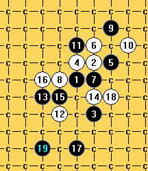

[互动棋谱]岚月立4传说中的二打5必胜！
#1 [互动棋谱]岚月立4传说中的二打5必胜！ 作者：wd1988 发表时间：2009-3-13 16:20:01
岚月传说二打必胜了，但是我没亲眼看到的东西我是不会相信的（就好像斜月一打）。我宁可自己花时间拆解一些所谓的“早已必胜”的局面，也不愿意人云亦云。
岚月立4貌似是最容易二打地毯的局面，我和裁决殿奥义在三手二花了很多时间拆解，在某高手的强力援助下，最终拆出了黑二打必胜。期间很多无名高手前来给与了积极的意见，促进了此贴的诞生。在此，我要感谢前来帮忙的朋友们，让我们少走了很多弯路。
很多大师对于我们这些初级研究者的成果，觉得不是很有用，当然，岚月立4黑二打必胜显然是早有结论且早有地毯了的（否则我又怎么可能拆出必胜？），但是爱五子棋作为国内最好的五子棋论坛，我尚且没有看到地毯的发布（对点的讨论不在此列），所以我认为这个变化可能还没有普及。在当前RIF规则下这种研究显然是没有用的，但是对于初学者学习对五子棋的理解时，这些谱就犹如定式谱一样有着积极向上的意义。所以本着推广的心态，我发布了这个棋谱，这种程度的研究肯定是不会对我国职业棋界产生冲击的，更不会被国外盗用而影响我国棋手的成绩。
所以，我在此发出来。感谢一直支持我的朋友们，感谢爱五子棋这个平台！
 岚月立4黑二打地毯.part02.rar
岚月立4黑二打地毯.part02.rar
［本站用户 失落刀 于 2009-3-13 16:27:06 花5个金币送您鲜花一朵］
［ 失落刀 于 2009-3-13 16:27:18 时奖励此帖[金币加 20 威望加1］
感谢你。
［本站用户 飞哥 于 2009-3-14 11:02:37 花5个金币送您鲜花一朵］
［本站用户 飞哥 于 2009-3-14 11:02:46 花5个金币送您鲜花一朵］
［本站用户 茗弈小刀 于 2009-3-14 11:12:40 花5个金币送您鲜花一朵］
［本站用户 二十七刀 于 2009-3-14 11:35:07 花5个金币送您鲜花一朵］
［本站用户 五子痴 于 2009-3-14 15:29:17 花5个金币送您鲜花一朵］
［本站用户 五子痴 于 2009-3-14 15:29:23 花5个金币送您鲜花一朵］
［本站用户 五子痴 于 2009-3-14 15:29:28 花5个金币送您鲜花一朵］
［本站用户 五子痴 于 2009-3-14 15:29:32 花5个金币送您鲜花一朵］
［本站用户 五子痴 于 2009-3-14 15:29:36 花5个金币送您鲜花一朵］
［本站用户 gerbo 于 2009-3-15 3:18:24 花5个金币送您鲜花一朵］
［此帖子已被 茗弈小刀 在 2009-4-22 19:38:33 编辑过］
#2 Re:岚月立4传说中的二打5必胜！ 作者：缘来 发表时间：2009-3-13 16:35:16
lz您好伟大
#3 Re:岚月立4传说中的二打5必胜！ 作者：逆刃 发表时间：2009-3-13 16:36:02
我好像记得爱五子棋网上好像发过的吧，不知道是不是在无敌天下版块，LZ的谱和我电脑上的是一样的。不过还是很感谢你的分享！#4 Re:岚月立4传说中的二打5必胜！ 作者：wd1988 发表时间：2009-3-13 16:42:03
楼上的，我瞪大眼睛在无敌天下看了，有一个“斜月白立四必胜”，但不是岚月的。
#5 Re:岚月立4传说中的二打5必胜！ 作者：失落刀 发表时间：2009-3-13 16:42:35
晕s了，楼主解释清楚就可以，不应该对逆刃这样态度说话呀，逆刃显然没有恶意。［本站用户 茗弈小刀 于 2009-3-14 11:12:16 花5个金币送您鲜花一朵］
#6 Re:岚月立4传说中的二打5必胜！ 作者：wd1988 发表时间：2009-3-13 16:44:11
我啥也没说呀，嘻嘻，逆刃电脑上有这个谱竟然不发，该罚他请吃饭#7 Re:岚月立4传说中的二打5必胜！ 作者：逆刃 发表时间：2009-3-13 16:44:43
应该是我记错了。不过我只说是好像。
#8 Re:岚月立4传说中的二打5必胜！ 作者：逆刃 发表时间：2009-3-13 16:47:18
你可以发，因为你是自己研究出来的，有自己的功劳和努力，而我这个，我好像没有研究它，应该是别人给我的，我还是不发表的好。［本站用户 茗弈小刀 于 2009-3-14 11:13:13 花5个金币送您鲜花一朵］
#9 Re:岚月立4传说中的二打5必胜！ 作者：wd1988 发表时间：2009-3-13 16:49:14
我发谱必须要自己验证路线无误才敢发。就像溪峡月和瑞星三打一样，谱我早有了，我还是一定要自己打一遍。但是人非圣贤，肯定有出差错的地方。欢迎大家指正！#10 Re:岚月立4传说中的二打5必胜！ 作者：逆刃 发表时间：2009-3-13 16:52:49
这样的精神值得鼓励。#11 Re:岚月立4传说中的二打5必胜！ 作者：冷面孤煞 发表时间：2009-3-13 18:22:14
 楼主一开始就说岚月2打必胜了，那意思就是说，岚月必胜喽？本人研究不多，但是呢，以下几个打点，本人2打还是没能没出地毯哦，
楼主一开始就说岚月2打必胜了，那意思就是说，岚月必胜喽？本人研究不多，但是呢，以下几个打点，本人2打还是没能没出地毯哦，=======上图对应的爱五子棋谱代码如下，以便你拆解：========
h8i9i6h9
======================================================
=======上图对应的爱五子棋谱代码如下，以便你拆解：========
h8i9i6g8
======================================================
 还有一个点比较偏僻，这里就不说了，
还有一个点比较偏僻，这里就不说了，
#12 Re:岚月立4传说中的二打5必胜！ 作者：无心永恒 发表时间：2009-3-13 18:48:19
不错，岚月立二必胜我倒是比较容易的拆出来了。
11楼的2个4却还没有地毯掉。。
其中第一个图已经拆完最强的12了，但是其他12遇到了问题。。
第二个稍微拆得少点。
#13 Re:岚月立4传说中的二打5必胜！ 作者：wd1988 发表时间：2009-3-13 19:48:20
楼上的楼上，最强4也二打必胜了，不过谱暂时不放出来，时机没到，大家还需要消化#14 Re:岚月立4传说中的二打5必胜！ 作者：冷面孤煞 发表时间：2009-3-13 21:30:18
13楼的，我听了很晕哦，这么看来，你的岚月能必胜了？我们就这里拆解如何？
#15 Re:岚月立4传说中的二打5必胜！ 作者：wd1988 发表时间：2009-3-14 9:04:38
请不要断章取义，我说话向来非常严谨。我说的是“最强4可以二打必胜”，至于其他的，我时间精力有限，没有去管了。我没有去管的4，存在的强防是我始料不及的，我不可能没有谱就在这吹我全部可以必胜了。
至于你说的第一个最强4，二打黑确实必胜，如图：看图看不明白，请找我QQ拆解，QQ号请站内信密我
两个强12的必胜路线参考：

#16 Re:岚月立4传说中的二打5必胜！ 作者：游戏人间 发表时间：2009-3-14 10:20:10
最强的几个16怎么没看到。。。
#17 Re:岚月立4传说中的二打5必胜！ 作者：飞哥 发表时间：2009-3-14 11:02:24
谢谢楼主的分享！茗弈裁决永好！#18 Re:岚月立4传说中的二打5必胜！ 作者：雅典娜 发表时间：2009-3-14 11:28:30
这个走法基本通山月了!#19 Re:岚月立4传说中的二打5必胜！ 作者：二十七刀 发表时间：2009-3-14 11:34:52
兄弟,我来了#20 Re:岚月立4传说中的二打5必胜！ 作者：wd1988 发表时间：2009-3-14 11:42:06
游戏人间，你说的是立四的强16还是上面发的4的强16？立四的你可以直接发图，强4的图如下：
#21 Re:岚月立4传说中的二打5必胜！ 作者：明五 发表时间：2009-3-14 11:54:18
我是门外汉,特来学习。#22 Re:岚月立4传说中的二打5必胜！ 作者：冷面孤煞 发表时间：2009-3-14 12:12:09
楼主同志，这里有N个16可以下，啊哈哈，图1
=======上图对应的爱五子棋谱代码如下，以便你拆解：========
h8i9i6h9j9i10i8g8j11k10h10g6f7i7g7f8
======================================================图2
=======上图对应的爱五子棋谱代码如下，以便你拆解：========
h8i9i6h9j9i10i8g8j11k10h10g6f7i7g7f9
======================================================
#23 Re:岚月立4传说中的二打5必胜！ 作者：wd1988 发表时间：2009-3-14 12:16:23
楼上的，麻烦您翻到第2页，看最后一个回帖。看清楚了，你就会明白，向人请教的时候，不应该是这个态度的

#24 Re:岚月立4传说中的二打5必胜！ 作者：冷面孤煞 发表时间：2009-3-14 12:17:50
=======上图对应的爱五子棋谱代码如下，以便你拆解：========
h8i9i6h9j9i10i8g8j11k10h10g6f7i7g7f8
======================================================这个16有？
#25 Re:Re:岚月立4传说中的二打5必胜！ 作者：wd1988 发表时间：2009-3-14 12:21:52
怎么没有
#26 Re:岚月立4传说中的二打5必胜！ 作者：冷面孤煞 发表时间：2009-3-14 12:21:57
LZ同志，请不要随便用地毯这两个字眼哈，太刺眼了，我想就算是大鱼老师都不敢说这个强4他地毯了，
#27 Re:Re:岚月立4传说中的二打5必胜！ 作者：wd1988 发表时间：2009-3-14 12:24:44
我就敢说这个4地毯了，别人敢不敢我可不知道，就算是大鱼，实战我竖大拇指，研究他还不敢称第一。（在下也不敢称第一）
#28 Re:Re:岚月立4传说中的二打5必胜！ 作者：wd1988 发表时间：2009-3-14 12:26:07
所谓的几个强16，全部地毯了。没地毯的不会标上c的。c1c2c3c4都是c，只不过是为了标注强弱程度而已
#29 Re:岚月立4传说中的二打5必胜！ 作者：wd1988 发表时间：2009-3-14 12:29:34
你仔细看一下15楼的图，那是回答游戏人间的疑问的#30 Re:岚月立4传说中的二打5必胜！ 作者：就是爱玩 发表时间：2009-3-14 12:31:13
楼主把自己的研究截图出来，大家若有什么疑问直接询问便是，即使发现了什么问题，我想楼主也会虚心接受的。但是不要总是用质疑不屑甚至讽刺的态度对待楼主的研究啊。
这样有点不礼貌、不公平，会打击积极性的！
［本站用户 失落刀 于 2009-3-14 12:45:09 花5个金币送您鲜花一朵］
#31 Re:岚月立4传说中的二打5必胜！ 作者：潇洒 发表时间：2009-3-14 12:34:40
山月最强4两年前确实就地毯了
不过那时有地毯的只是少数几个人
#32 Re:岚月立4传说中的二打5必胜！ 作者：冷面孤煞 发表时间：2009-3-14 12:37:00
哇，这个17是很强
=======上图对应的爱五子棋谱代码如下，以便你拆解：========
h8i9i6h9j9i10i8g8j11k10h10g6f7i7g7f8h4j7
======================================================图1
=======上图对应的爱五子棋谱代码如下，以便你拆解：========
h8i9i6h9j9i10i8g8j11k10h10g6f7i7g7f8h4g5
======================================================
#33 Re:Re:岚月立4传说中的二打5必胜！ 作者：wd1988 发表时间：2009-3-14 12:41:02
原来是两年前就有人地毯了的，我又二了一把。早晚这个我也会发出来的。

#34 Re:岚月立4传说中的二打5必胜！ 作者：冷面孤煞 发表时间：2009-3-14 12:48:31
 这么说是我孤陋寡闻喽
这么说是我孤陋寡闻喽
#35 Re:岚月立4传说中的二打5必胜！ 作者：wd1988 发表时间：2009-3-14 12:51:17
所以说话的时候，千万别扯上别人。我相信大鱼老师肯定有谱的#36 Re:岚月立4传说中的二打5必胜！ 作者：五子痴 发表时间：2009-3-14 15:29:00
这样的好帖 不顶你都不行!楼住真我心目中的
#37 Re:岚月立4传说中的二打5必胜！ 作者：游戏人间 发表时间：2009-3-15 0:28:38
能不能顺便标出参考了谁的谱啊。。。这个不是吹牛岚月立二第一份手工地毯谱是我24小时不休息通宵和夜火搞出来的。咋就很快成了没用的研究了呢。我还真不相信现在有多少人实战能完全下对的。#38 Re:岚月立4传说中的二打5必胜！ 作者：游戏人间 发表时间：2009-3-15 0:30:56
=======上图对应的爱五子棋谱代码如下，以便你拆解：========
h8h9i6i9j9i10i8g8j11k10h10g6f7i7g7f6
======================================================
顺便说下我说的强16是这个。虽然地毯了。但是依然实战很有价值的。
#39 Re:岚月立4传说中的二打5必胜！ 作者：行云流水 发表时间：2009-3-15 0:41:09
这个不是吹牛岚月立二第一份手工地毯谱是我24小时不休息通宵和夜火搞出来的。
这个我倒是可以证明！
#40 Re:岚月立4传说中的二打5必胜！ 作者：wd1988 发表时间：2009-3-15 8:18:52
我拿到的第一张岚月立二是机械制品，手工是不可能做到这样的。偏偏这个好东西没有署名，说不定作者是参考了A的那份参考过B和C一起研究的，以D为基础的人的谱的，这么一来我用的就是三手四手乃至更多手的成品，作者被标注为“不可考证”，所以我也没没法验证了。#41 Re:岚月立4传说中的二打5必胜！ 作者：无心永恒 发表时间：2009-3-17 12:37:14
山岚的变化难点我感觉不在14之后，因为之前很多人做了很多工作，反倒是很多12很烦人……
#42 Re:[互动棋谱]岚月立4传说中的二打5必胜！ 作者：岑小鱼 发表时间：2009-10-24 13:34:17
多年前向大师们请教了些变化 但依然有些防御我还是没能找到正解